Systems Analysis & Design
Auto Cars – Web-Based Taxi Reservation Platform
Overview
Acting as the system analyst for Auto Cars, a Sri Lankan taxi service, I produced an end-to-end systems analysis and design package for a new web-based reservation platform. The brief: customers and drivers register online, customers book taxis (or a phone operator books on their behalf), the system auto-assigns the nearest available driver, and customers rate drivers after each trip. The deliverable covers the full front end of the SDLC from methodology selection through to interface design culminating in a formal Software Requirements Specification (SRS).
What I Did
1. SDLC Methodology Evaluation
I critically evaluated the strengths and weaknesses of traditional methodologies (Waterfall, V-Model, Prototype, Spiral) against agile and hybrid approaches (Scrum, Kanban, Extreme Programming, Lean, Crystal, Feature-Driven Development, DSDM, Rapid Application Development, DevOps).
I directly compared traditional vs. agile approaches against the Auto Cars scenario's specific constraints changing requirements, tight timelines, and the need for early stakeholder feedback. The analysis justified Agile (Scrum) as the recommended methodology, with a critical rationale for why a traditional, sequential approach was a poor fit for this project.
2. Feasibility Study
I produced a full feasibility report covering seven dimensions:
- Technical system architecture, database capacity, location-tracking infrastructure
- Economic development and operational costs, revenue model
- Operational integration with existing taxi operations, staff training needs
- Schedule development timeline, go-live readiness
- Legal SMS/data privacy obligations, licensing compliance
- Environmental sustainability and business continuity impact
- Resource team skills, infrastructure, tooling
Each feasibility criterion was mapped directly onto the Auto Cars context, and I evaluated the relative importance of each dimension for a startup-style web platform vs. an established internal system.
3. Requirements Engineering
I elicited and documented functional, non-functional, and domain requirements for the platform, including registration, booking, driver assignment, rating, SMS notification, and operator-assisted booking.
I compared requirement-gathering techniques interviews, surveys, focus groups, prototyping, document analysis, reverse engineering, JAD sessions and justified surveys, interviews, and prototyping as the most effective combination for this stakeholder group (customers, drivers, phone operators, management).
4. System Design Specification
I designed the complete system architecture, including the frontend, backend, database layer, and external service integrations for SMS and payments.
The system was modelled using multiple diagramming techniques, each justified for its communication effectiveness to different stakeholders:
- Data Flow Diagrams Context diagram, Level 0, and Level 1 (business process flows)
- Entity-Relationship Diagram (ERD) Customer, Driver, Booking, Vehicle, and Feedback entities and relationships
- Use Case Diagrams registration, booking, driver assignment, and rating flows
- Class Diagrams Customer, Driver, Booking, Vehicle, and Feedback object-oriented design
- Flowcharts step-by-step flows for registration, booking, driver assignment, and feedback submission
5. Software Requirements Specification (SRS)
I authored a formal SRS document including:
- Purpose, scope, and stakeholder identification
- Functional requirements (core platform features and user workflows)
- Non-functional requirements: performance, security, usability, scalability, and reliability
- Data and database requirements
- Testing and QA strategy test planning, execution, bug tracking, tooling, and quality metrics
- Project timeline, budget estimate, and resourcing plan
- Risk register with mitigation strategies
6. UI/UX Design
I designed wireframes and interface prototypes for the full customer and driver journey:
- Home page and landing experience
- Registration flows (customer and driver)
- Login and account management
- Taxi booking interface with vehicle selection
- Live driver location and proximity alerts
- Ride review and feedback submission
- Admin dashboard with ride history and reporting
All designs applied UX principles around responsive design, interactive maps, and dashboard usability for both drivers and administrators.
System Screenshots
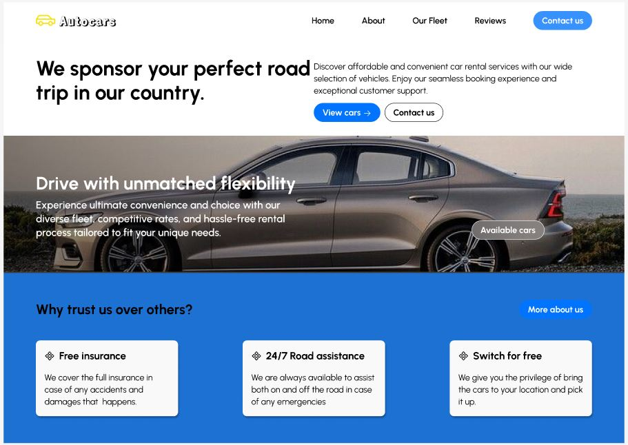
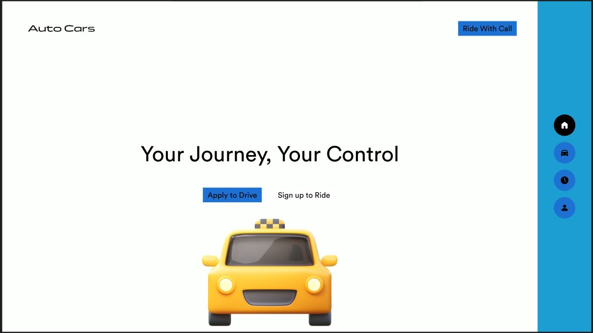
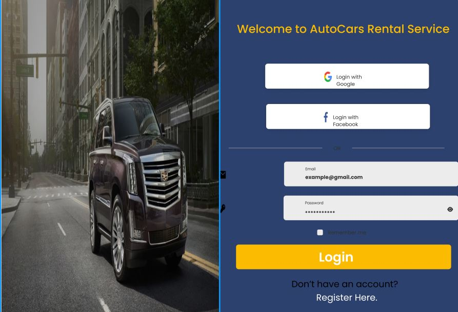
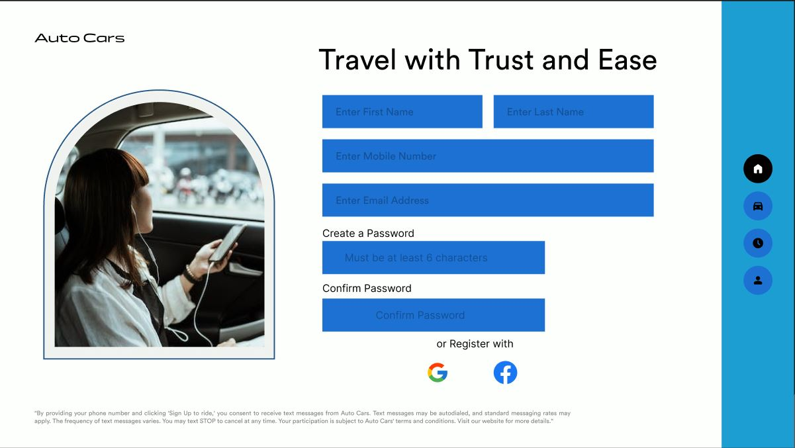
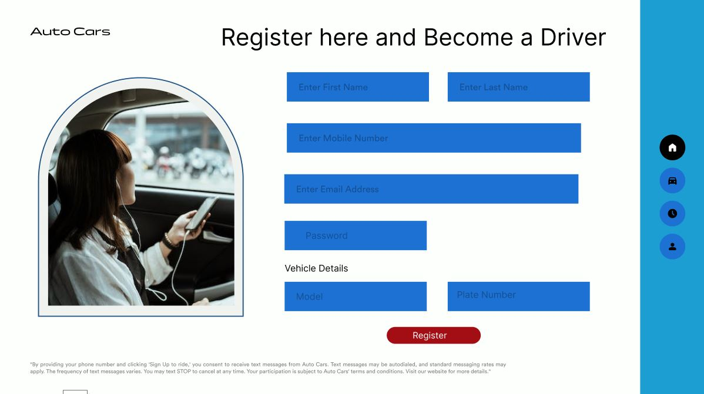
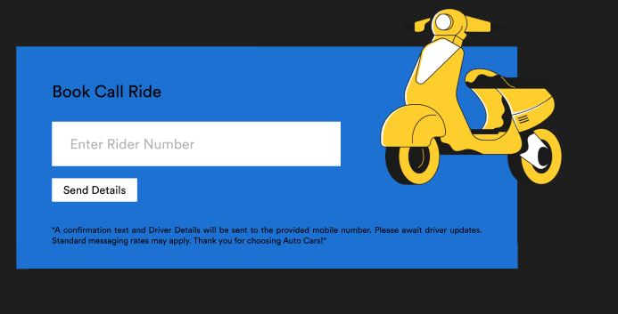
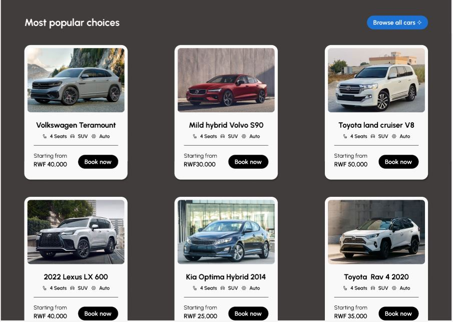
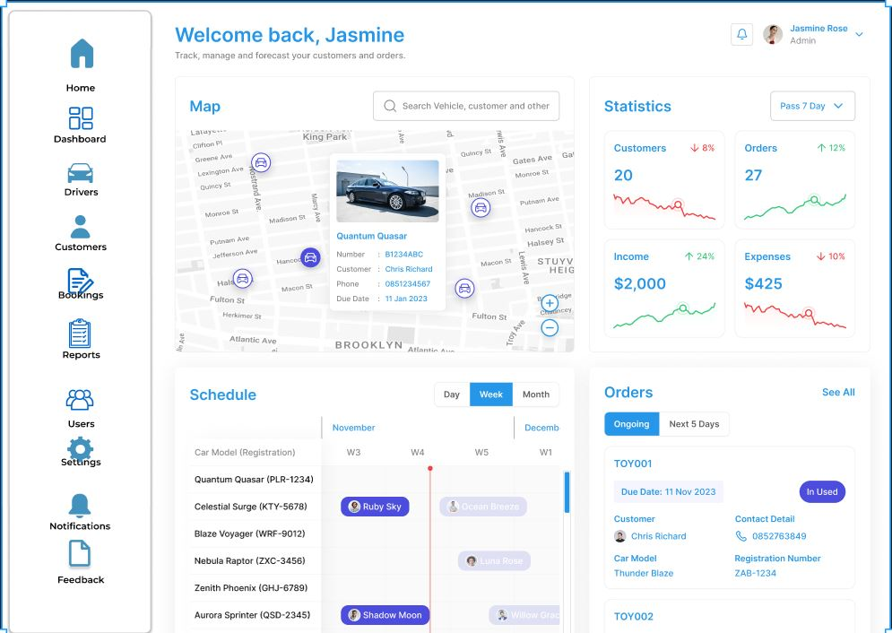
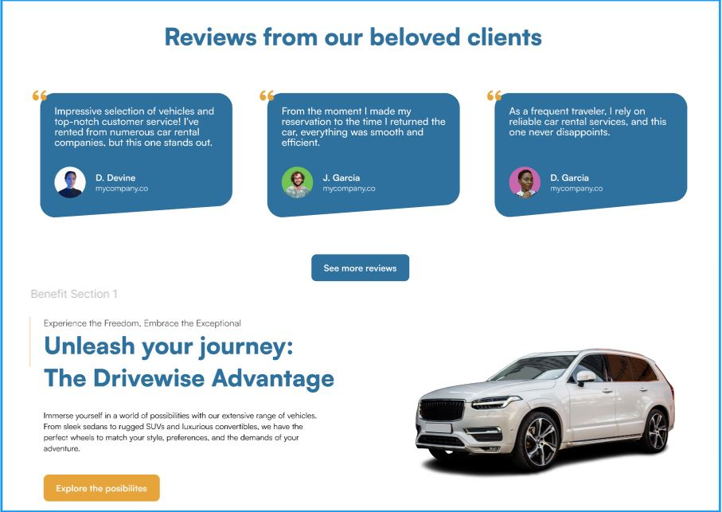
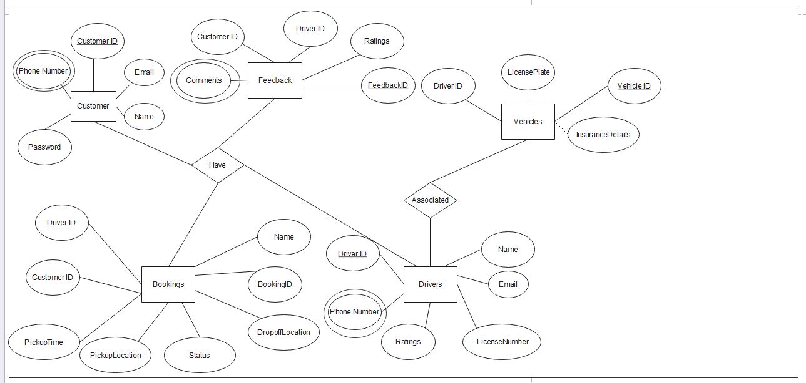
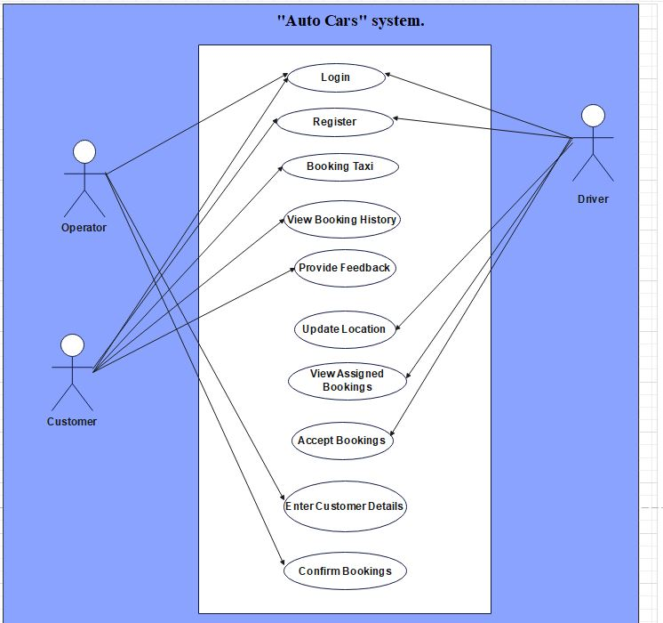
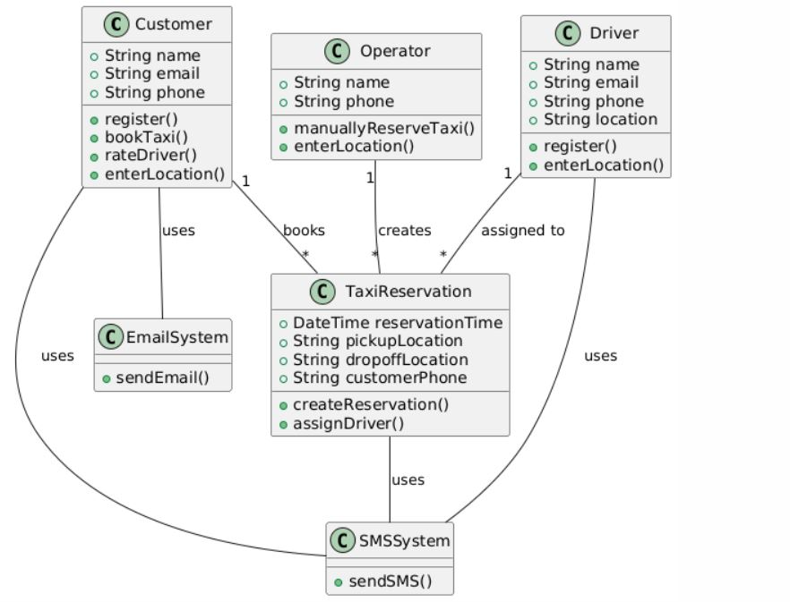
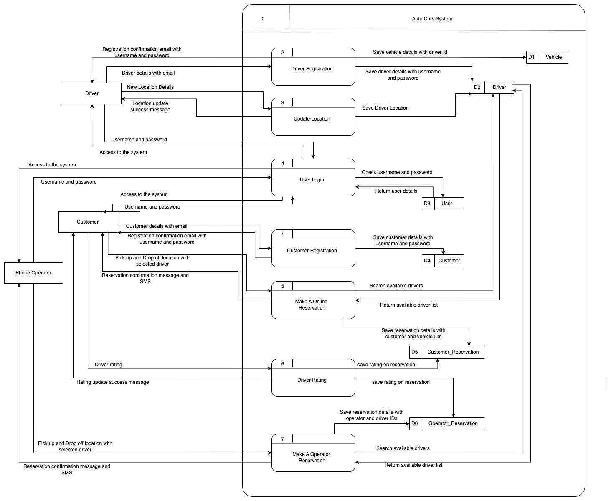
Skills Demonstrated
Why It Matters
This project demonstrates the analyst side of software delivery the ability to take an ambiguous business problem (a taxi company wanting to "go digital"), choose the right delivery methodology, prove the idea is feasible, translate stakeholder needs into formal requirements, and hand off a design specification a development team could actually build from.
It shows end-to-end thinking that sits upstream of writing code, and demonstrates comfort operating across both the business and technical sides of a project from feasibility reports and stakeholder interviews all the way through to wireframes and formal documentation.